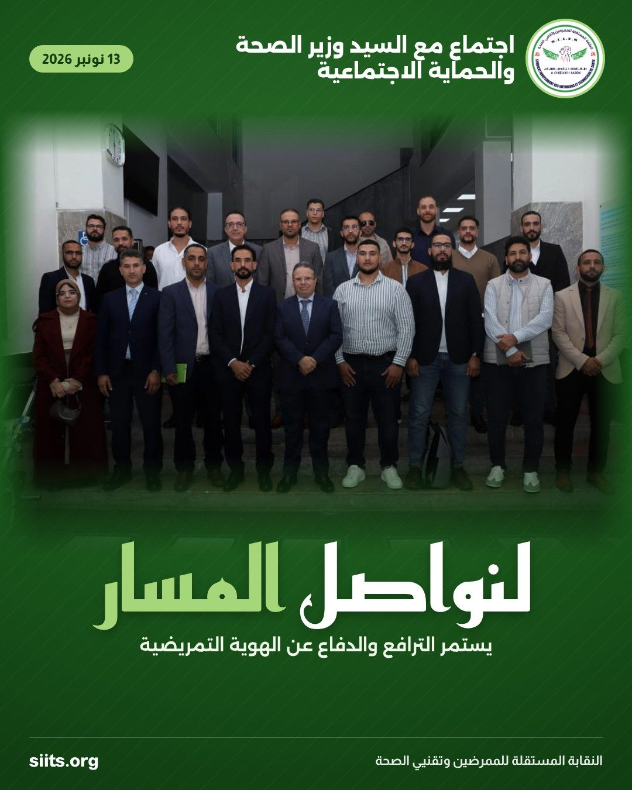

انتهاء اجتماع المكتب الوطني مع السيد وزير الصحة والحماية الاجتماعية

في إطار الحوار الاجتماعي القطاعي ومواصلة الترافع عن الملف المطلبي للممرضين وتقنيي الصحة، انتهى قبل قليل الاجتماع الذي عقده المكتب الوطني للنقابة المستقلة للممرضين وتقنيي الصحة مع السيد وزير الصحة والحماية الاجتماعية.
وقد شكّل هذا اللقاء مناسبة لطرح أبرز القضايا التي تشغل الشغيلة التمريضية، وفي مقدمتها صون المكتسبات وتحصين الهوية التمريضية.
سنوافيكم بالتفاصيل فيما بعد.
لنواصل المسار.
فتح في تطبيق النقابة